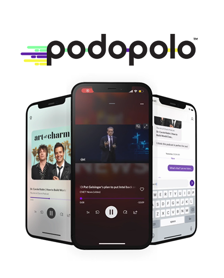
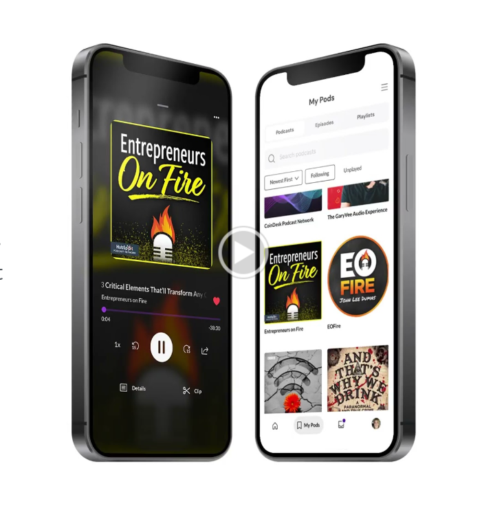
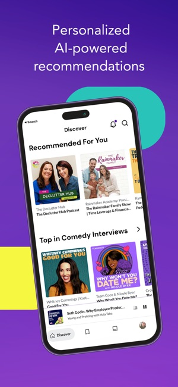

Podopolo is an innovative podcast platform that combines AI technology with social networking features to enhance the podcast listening experience. It boasts a vast library of over 5 million audio and video podcasts across various genres and languages. Unique to Podopolo, users can discover new content through personalized recommendations, engage in discussions, share highlights, and participate in listening parties. The platform also offers podcast creators advanced analytics, engagement tools, and monetization opportunities. Its user-friendly interface and social sharing capabilities make it a versatile choice for podcast enthusiasts and creators alike, available on both the Apple App Store and Google Play Store.
In my role as a Tech Lead at Podopolo, I've had the opportunity to lead and implement several transformative projects that have significantly enhanced our platform's performance and user experience. One of my most notable achievements was the redesign of the login and onboarding pages for our mobile application. This project was particularly fulfilling as it directly improved user engagement and significantly increased conversion rates. My focus on creating a more intuitive and user-friendly interface played a pivotal role in achieving these results.
Another area where I made a substantial impact was in optimizing waveform rendering on the clip screen. This technical challenge was crucial for handling larger episodes, a common feature in our extensive podcast library. My efforts in streamlining this process led to a marked reduction in load times, greatly enhancing overall app performance. This improvement was not only a significant technical accomplishment but also highly valued by the company for its positive effect on user experience.
Leading a team of three Front-End developers has been a rewarding aspect of my role at Podopolo. I've focused on fostering team synergy and enhancing code quality through regular code reviews and personalized mentoring sessions. This approach has not only improved our team's output but also helped in the professional growth of individual team members. It's been gratifying to see how effective collaboration and a shared commitment to excellence can drive remarkable results.
Furthermore, I demonstrated initiative by upgrading our Storybook documentation to the latest version. This strategic decision was crucial in improving team efficiency and ensuring consistency in UI component development. It's been a vital tool for our team, allowing us to maintain high standards across our user interface elements. This upgrade has not only streamlined our development processes but also set a precedent for continuous improvement and adaptation of the latest technological advancements in our workflow.



- Categories: Mobile App
- Period: 04/2023 - Today
- Landing Page: podopolo.com